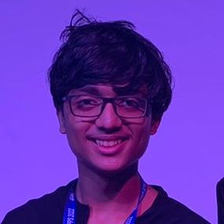

Kavin Valli, student and developer
My name is Kavin and I am a fullstack developer experienced in TypeScript, JavaScript, Python and Rust and have worked with frameworks like React, Next.js, Django, Express and Laravel. I also have experience building developer tools, SDKs, and mobile apps with Flutter.
I am currently a SWE Intern at Vercel. Previously, I shipped developer tooling at Helicone (YC W23), building LLM observability features and an open-source AI Gateway in Rust.
I am a former President of Exun Clan ('22-23) and a Computer Engineering student at the University of Waterloo (CE '28). I am also a Chapter Officer at the New Delhi Space Society, a chapter of the National Space Society, USA. I am a core maintainer of Typewind (2.2K+ stars).